First Scene 01 video pilot accepted
SH03 became the first accepted Flow/Omni dialogue render. The Adams attached voice reads higher, sharper, and more intense than Franklin, giving useful character contrast.
About
This site is for friends and collaborators who want to understand what I am making without needing to read every production note. The film is a theatrical scene about Franklin and Adams working toward the phrase that will become "self-evident"; the process is a test of how script, reference images, voice tests, and AI video renders can become something coherent.
Current focus
The Committee has cleared SH03 and the full SH06-SH10 run, using a split action/dialogue pattern for any shot that changes candle state or crosses the stage. What's left is the front half of the scene, SH01, SH02, SH04, and SH05, plus a decision on Google Flow/Omni's visible export watermark before committing to a final delivery pipeline.
Next visible actions
Render the remaining Scene 01 video pilots: SH01, SH02, SH04, and SH05.
Decide how to handle Google Flow/Omni's visible export watermark before committing to a final delivery pipeline.
Draft and test the narrator line and long-dissolve "Messenger light" interstitial planned between SH09B and SH10.
Evaluate the prologue idea: a black title card reading Philadelphia, 1776. dissolving into the May Franklin test clip.
Production state
Recent work
SH03 became the first accepted Flow/Omni dialogue render. The Adams attached voice reads higher, sharper, and more intense than Franklin, giving useful character contrast.
Save Frame is now the default continuity tool when a clip needs to begin from an approved final frame, especially for handoffs, exits, entrances, and prop changes.
Franklin's long definition beat was split into SH06A and SH06B. The continuation held together well across two 10-second generations.
The SH07 retry confirmed that continuation prompting works when the intended final frame is used as the bridge.
Near-miss and rejected attempts showed wrong exit direction, duplicate Franklin, duplicate candles, and voice drift. SH08 is now only the candle pickup and line.
Asking one render for candle pickup, standing, and speech at once diluted the prompt. Splitting into a silent SH08A action clip and a separate SH08B dialogue clip fixed it, and both were accepted.
John Adams now uses Omni's Sadachbia voice and Ben Franklin uses Algenib. The ElevenLabs reads below were the original casting exploration; dialogue generation has since moved to Flow/Omni's native voices.
SH09 followed the same split-beat pattern: Adams's "don't be long" line, then Franklin's exit through the garden door. SH10 closes the scene with Adams writing alone. Every shot from SH06 through SH10 now has an accepted pilot.
Storyboard
The panel board includes SH01 through SH10 with keyframes, dialogue beats, motion notes, continuity notes, and render priorities. It is the director-facing map for moving from approved stills into video.
Open storyboardScene 01 - The Committee
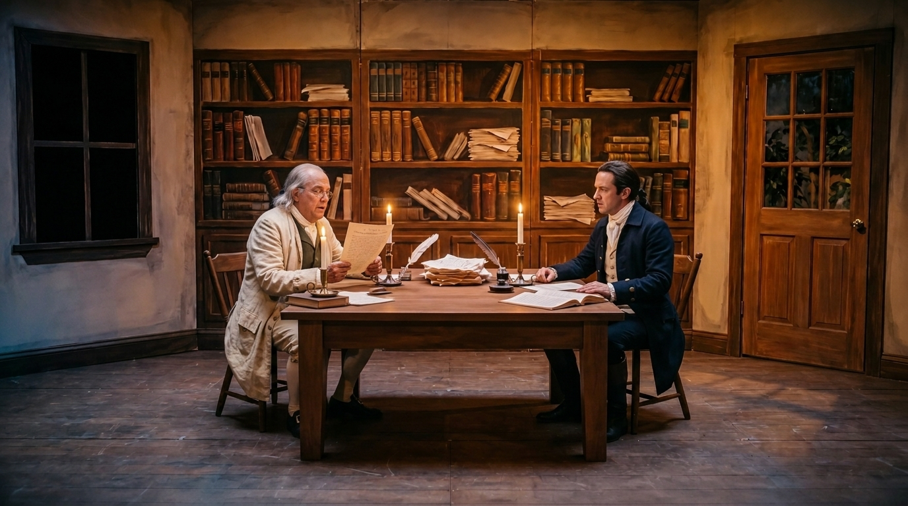
Keyframe approved, video pending
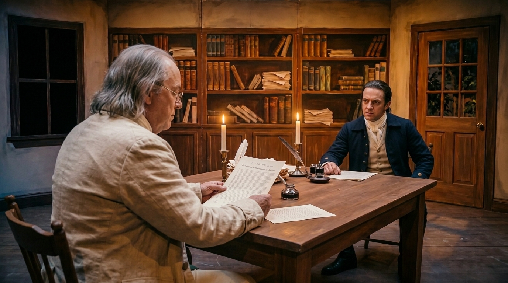
Keyframe approved, video pending
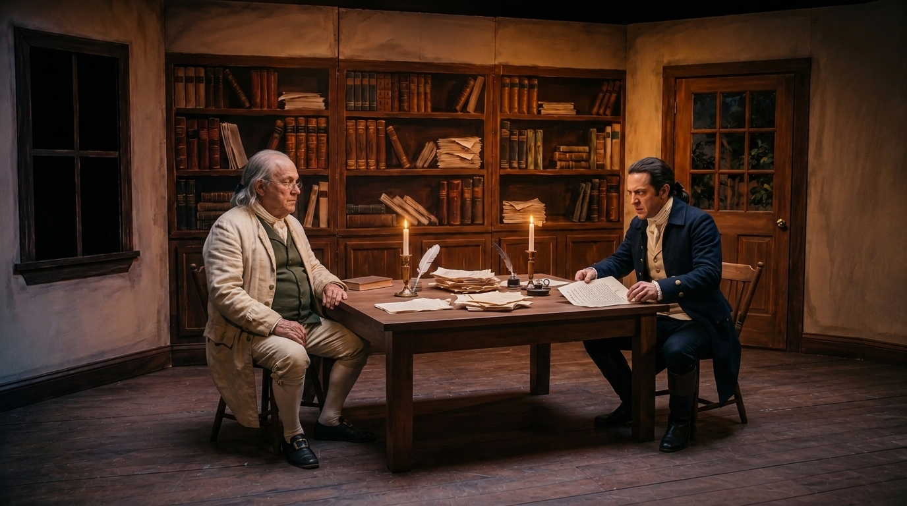
Pilot accepted
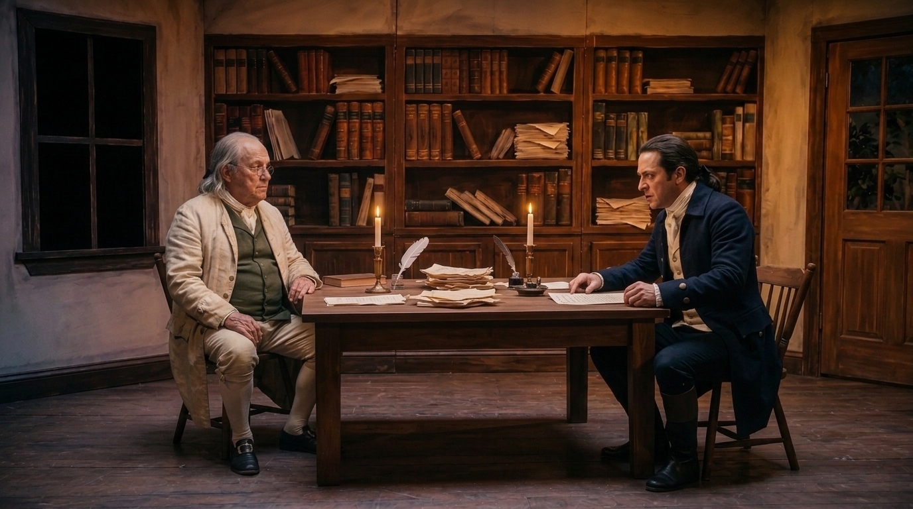
Keyframe approved, video pending
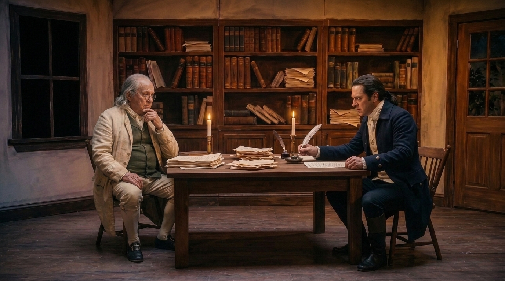
Keyframe approved, video pending
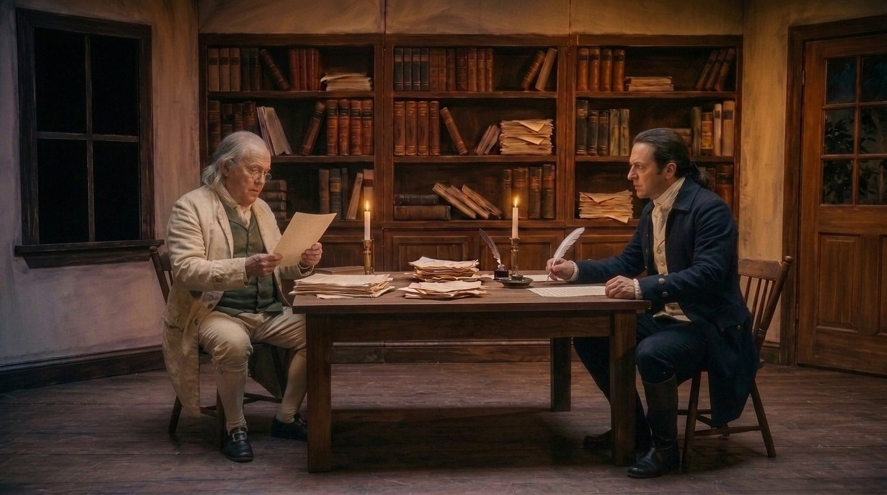
Two accepted clips
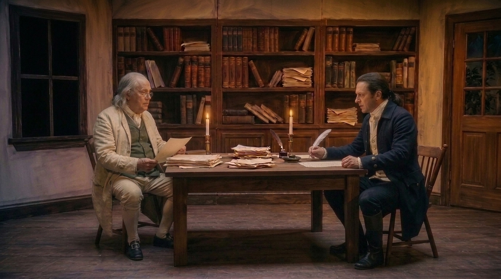
Pilot accepted
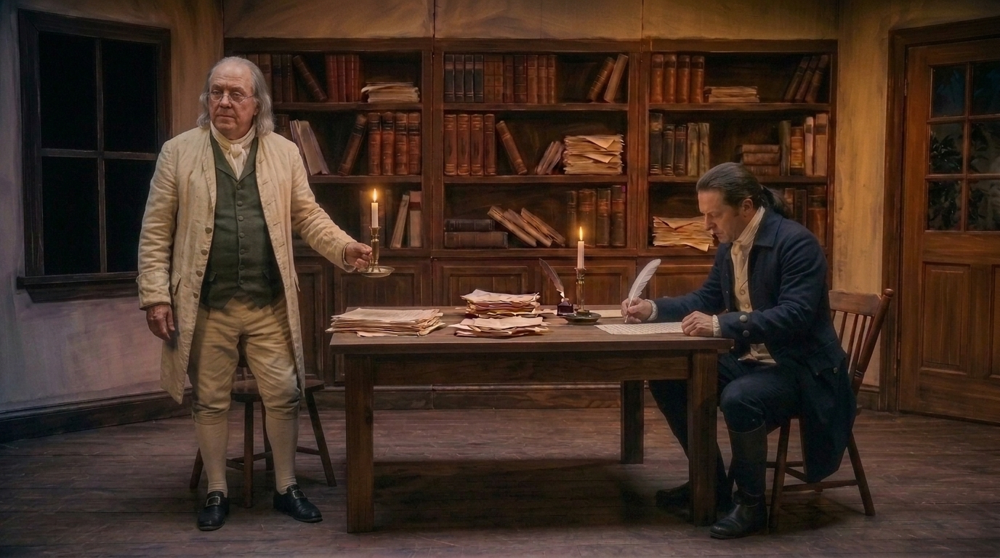
Two accepted clips
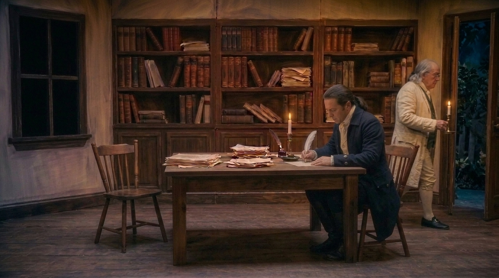
Two accepted clips
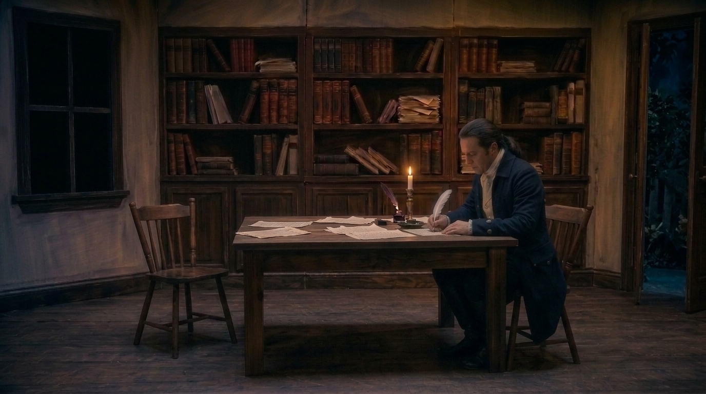
Pilot accepted
Voice Lab
These are test renders of a line from the play using four different ElevenLabs character voices. The goal was not final casting; it was to hear how age, pace, warmth, and argument change the dramatic shape of the same material. Production dialogue has since moved to Flow/Omni's native voices: John Adams uses Sadachbia, Ben Franklin uses Algenib. These four reads remain here as the original casting exploration.
Warm and grounded storyteller direction; useful as a calmer Franklin-leaning benchmark.
Older, characterful read for testing how much age and texture the line can carry.
Warm, captivating storyteller option; a polished baseline for narration or reflective delivery.
Sharper named option for testing whether the performance can support Adams's argumentative edge.
Scene 01
Scene 01 is where the project is proving whether a theatrical exchange can survive current AI video constraints: recurring faces, seated blocking, candle continuity, dialogue rhythm, and editable shot length. As of mid-July, every shot from SH06 through SH10 has an accepted pilot clip; SH01, SH02, SH04, and SH05 are next.
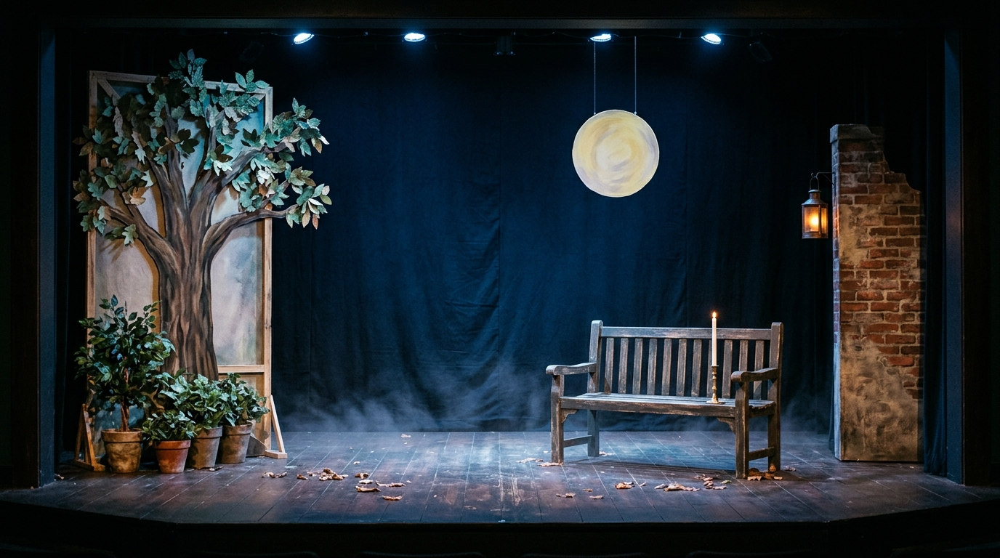
Scene 02
The garden material is still the emotional contrast point: quieter, more reflective, and more atmospheric. The current prologue idea may use an early Franklin garden clip as the first visual bridge into the world.
Decisions locked
SH03 is the first accepted Flow/Omni video render test; Adams voice and lip sync are promising.
SH06 should stay split across SH06A and SH06B because Omni's 10-second limit can still preserve one dramatic thought with Save Frame bridging.
SH07 works as a continuation after SH06 when the correct saved final frame is selected.
SH08 should no longer include the exit walk. Keep it to the candle handoff and line delivery; SH09 handles the crossing.
Any shot that changes candle state or crosses the stage is split into a silent action clip (A) and a dialogue clip (B). This fixed instruction dilution on SH08 and SH09 and is now the default pattern for multi-beat shots.
Native Omni dialogue voices are the production voice path: John Adams uses Sadachbia, Ben Franklin uses Algenib.